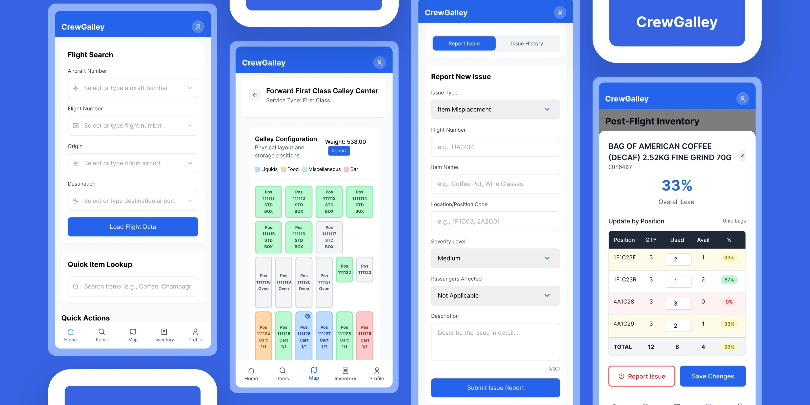
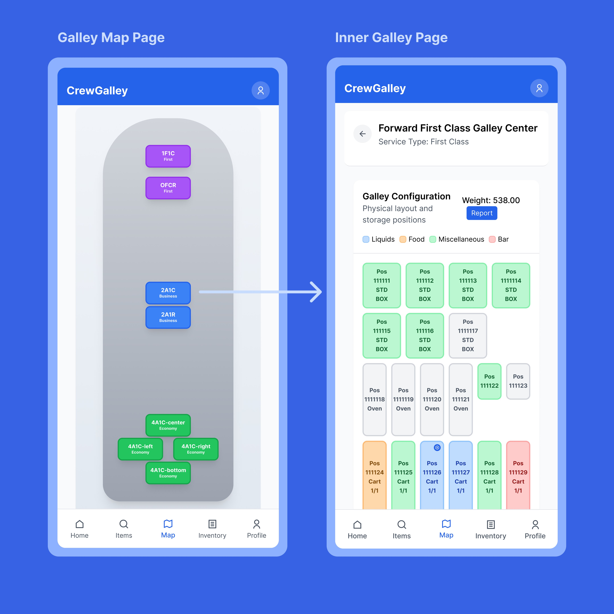
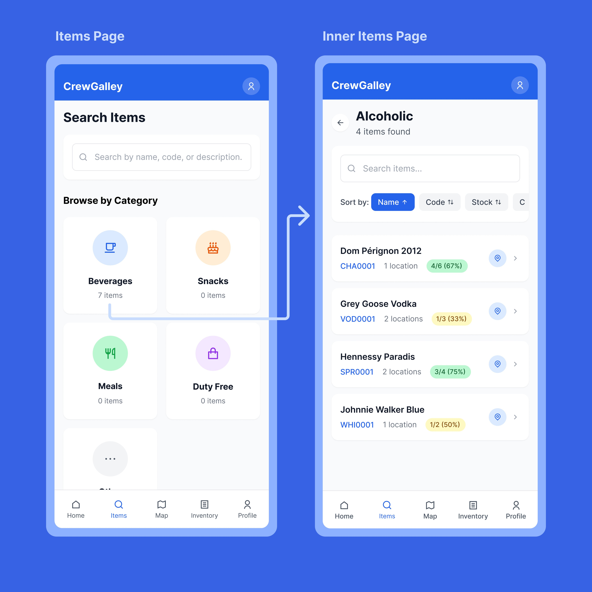
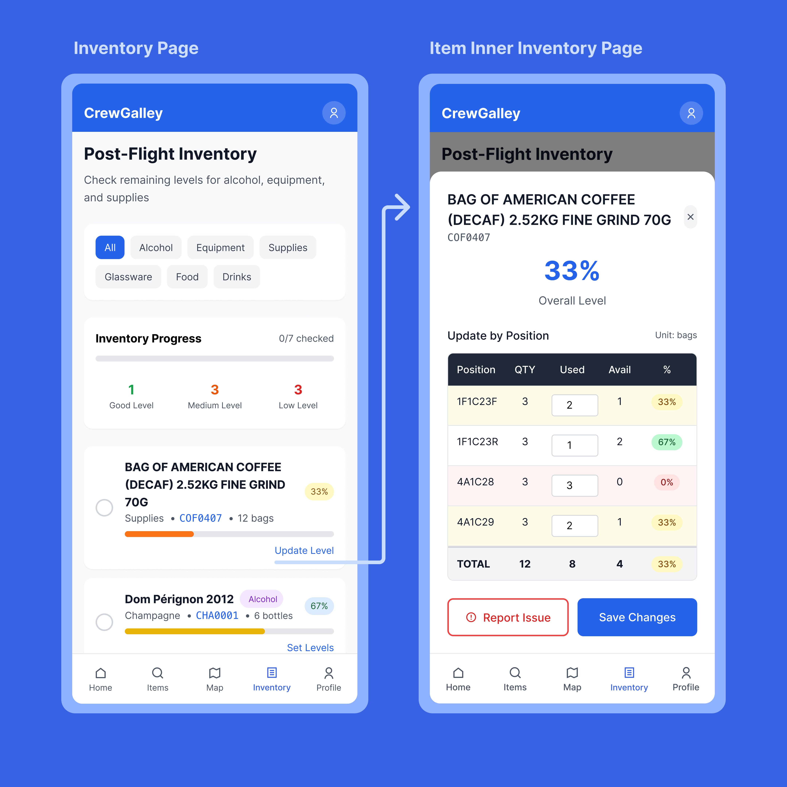
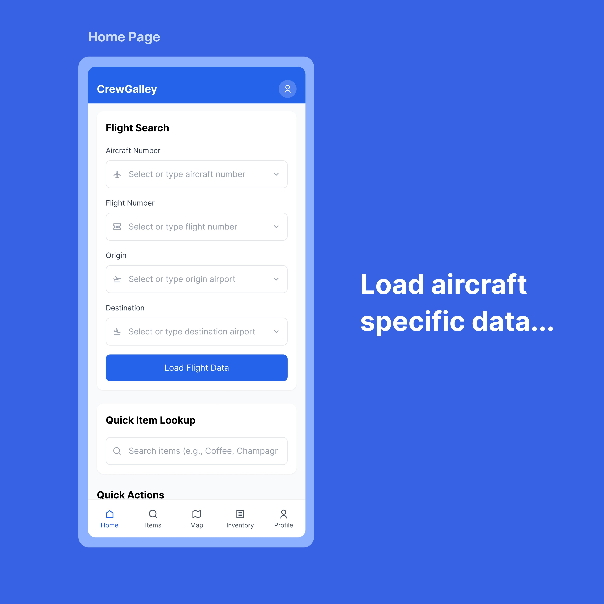

CrewGalley: Galley management, reimagined for mobile.
A native iOS app that replaces paper checklists with interactive galley maps, real-time inventory tracking,; additionally designed, built, and shipped to the App Store as a solo designer-developer.

Paper checklists don't fly at 40,000 feet.
Airline cabin crew manage dozens of galley carts, hundreds of inventory items, and a constant stream of in-flight issues, all while serving passengers at altitude. The existing process? Paper checklists, manual counting, and verbal handoffs between shifts.
This means lost items go unreported, inventory discrepancies surface only after landing, and ops managers have zero real-time visibility into what's happening across the fleet. I saw this problem firsthand and decided to build the tool that should have existed.
Crew pain points
- No way to quickly find where specific items are stowed across 8+ galleys
- Paper checklists are slow and error-prone, especially during turbulence
- Issue reporting is verbal; problems get lost between crew rotations
- Alcohol tracking is imprecise, leading to compliance headaches
Ops manager pain points
- No visibility into galley status until post-flight paperwork arrives
- Can't track recurring equipment issues across aircraft
- No data on actual consumption vs. expected inventory
- Multi-airline operations need data isolation; impossible with paper
Talking to the people who live this problem.
I conducted user interviews with active cabin crew members to validate the problem and understand their workflows in detail. These conversations revealed that the core issue wasn't just "paper is slow"; it was that crew members had no spatial mental model of the galley that matched reality.
A flight attendant working the aft galley couldn't quickly tell you what was in cart position 7R3 without physically opening it. The information architecture of the existing process was flat, a list of items with no spatial context.
From research to the App Store.
I followed a full design process, research, IA, wireframes, high-fidelity design, build, and ship. Because I was both designer and developer, I could iterate on design and code simultaneously, testing real interactions on device rather than relying on static prototypes.
Four features that changed how crew work the galley.
Interactive Galley Maps
A spatial, tappable map of the entire Boeing 777-300ER galley layout. Crew can tap any position to drill into trolley contents. This replaced the flat checklist with a view that matches how crew actually think about the aircraft.

Items Search & Browse
Browse inventory by category: beverages, snacks, meals, duty free, with searchable item lists showing stock levels, location count, and item codes. Sort by name, code, or stock for fast pre-flight checks.

Inventory Tracking
Post-flight inventory with per-position quantity tracking, percentage levels, and category filters. Crew can update usage by position, see overall levels at a glance, and report issues directly from the inventory detail view.

Flight Data & Quick Actions
The home screen lets crew load aircraft-specific data by searching flight number, aircraft registration, origin, and destination. Quick item lookup and action shortcuts put the most common tasks within one tap.

Screens from the shipped app.
The hard calls and trade-offs.
Designing for offline-first
The biggest challenge wasn't visual design; it was building for environments with zero connectivity. At 40,000 feet, there's no reliable internet. The app needed to function fully offline, queue changes locally, and sync gracefully when connectivity returned. This shaped every architectural decision: local state management, optimistic UI updates, and conflict resolution when offline edits collide with server state.
Spatial UI over flat lists
Early wireframes used a traditional list-based inventory view. User interviews revealed that crew think spatially; "the cart in the forward left galley, top position." Switching to an interactive map as the primary navigation paradigm was a major design pivot that improved task completion speed dramatically.
Multi-tenant architecture from day one
Rather than building for a single airline and refactoring later, I implemented Supabase Row Level Security from the start. Each airline's data is completely isolated at the database level. This was more work upfront but made the product scalable, any airline can onboard without touching the codebase.
Navigating the App Store review
Apple initially rejected the app, questioning whether it was an internal business tool rather than a public product. I wrote a detailed response clarifying that CrewGalley serves crew from any airline worldwide, not a single company. The app was approved on resubmission. Lesson learned: write your App Store narrative before you submit, not after rejection.
The full stack.
CrewGalley is a Next.js app wrapped in Capacitor for native iOS distribution. The backend runs on Supabase (PostgreSQL) with a 12-table schema, Row Level Security policies, and real-time subscriptions. Authentication uses Supabase Auth with session persistence, and the app includes a secure account deletion flow (required by Apple).

Shipped and live.
CrewGalley is live on the Apple App Store, available to airline crew worldwide. The project also connected me with Logintelix, an aviation logistics platform that is now building API endpoints to integrate their fleet data with CrewGalley's interface.
Published to the App Store
Successfully navigated Apple's review process, including an initial rejection and resubmission with clarified positioning.
Logintelix API partnership
Aviation logistics company building custom REST endpoints to feed fleet and inventory data into CrewGalley.
Multi-tenant from day one
Any airline can onboard with isolated data, no code changes required. 12-table PostgreSQL schema with RLS.
Design + code, one person
Research, UX, UI, frontend, backend, database, iOS packaging, and App Store submission, all handled solo.
What I'd do differently.
Start with real device testing earlier
I spent too long in the browser. The moment I loaded the app on a real iPhone, I caught issues, zoom bugs on input fields, touch target sizes that felt wrong, scrolling behaviors that Figma can't simulate. Test on device from week one.
Write the App Store narrative first
Apple's initial rejection taught me that product positioning matters as much to reviewers as it does to users. If I'd framed CrewGalley as a public tool (not an internal one) from the start, I'd have saved a week of back-and-forth.
Offline-first is a design problem, not just a dev problem
Building offline flows requires designing for uncertainty, what does the UI look like when you don't know if data is current? How do you communicate sync status without adding noise? This deserves its own design sprint.
Being designer + developer is a superpower, but scope is the enemy
When you can build anything you design, scope creep is invisible. Every "quick feature" costs real engineering time. The discipline of saying no to your own ideas is harder than saying no to a stakeholder's.